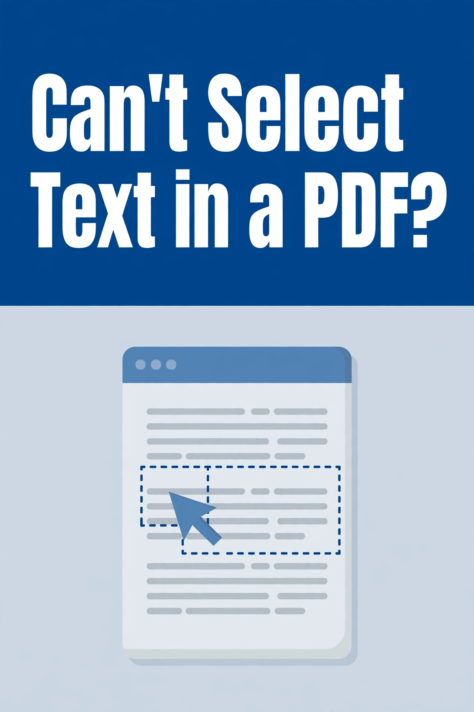
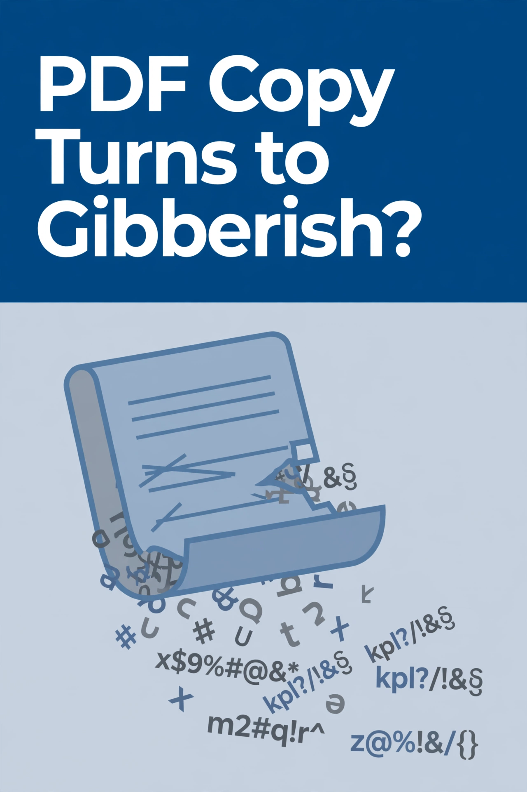
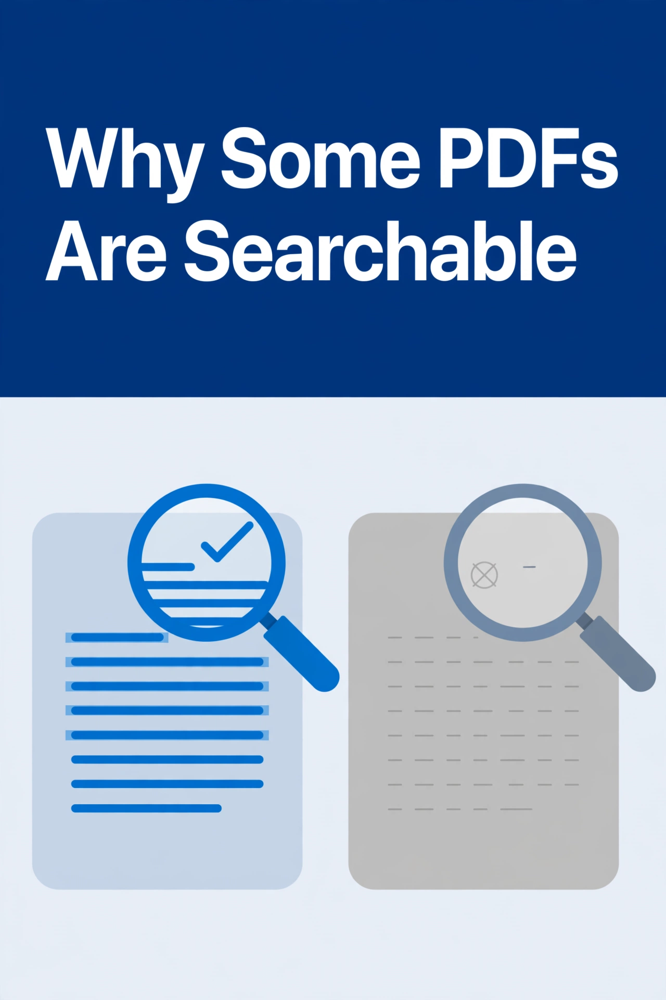
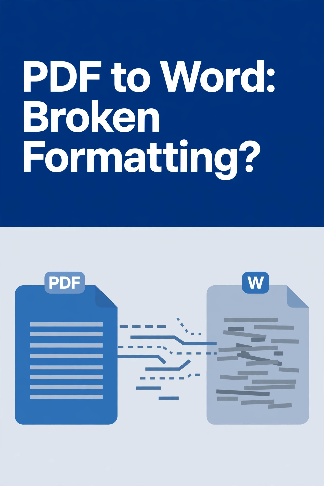
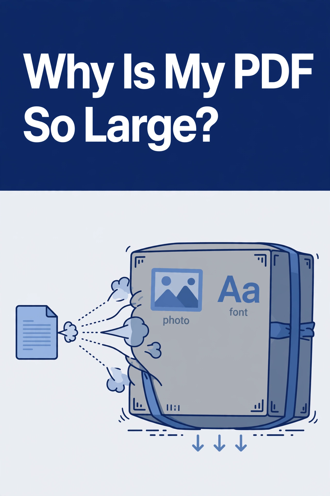
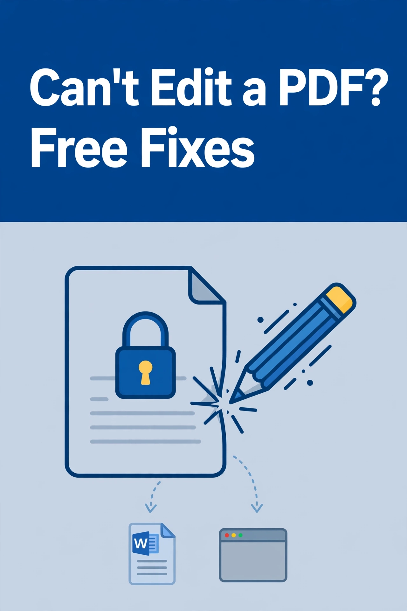

FileLogic article pins

Can't Select Text in a PDF?

PDF Copy Turns to Gibberish?

Why Some PDFs Are Searchable

PDF to Word: Broken Formatting?

Why Is My PDF So Large?

Can't Edit a PDF? Free Fixes